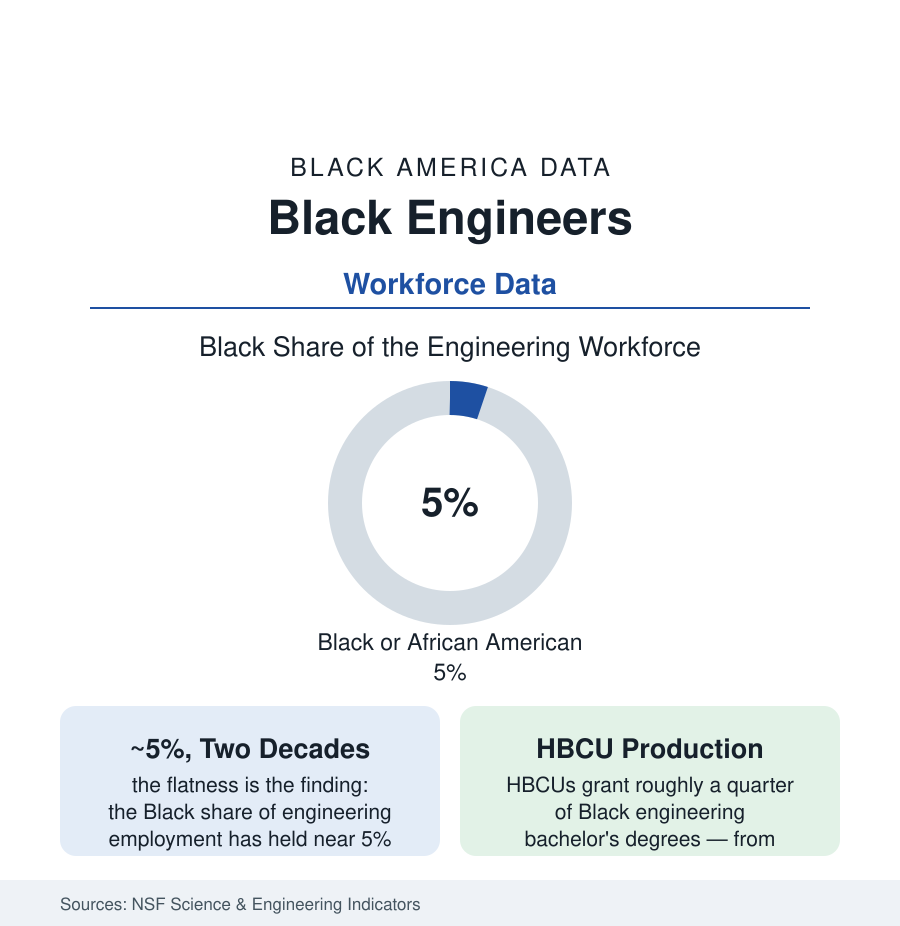

Black Employment
Black Engineers: Five Percent of the People Who Build the Systems
About 5% of America's engineers are Black — a share that has barely moved in two decades despite the STEM era's billions. The degree-to-workforce data.

Engineering is the profession the STEM era promised to diversify with the most money and the most rhetoric, and its headline number has barely moved in twenty years: Black engineers hold roughly five percent of the engineering workforce in the National Science Foundation's indicators — a share that has oscillated within a point while total engineering employment grew, the diversity programs multiplied, and the Black population's degree attainment rose around it. The file is not a story of no progress — the degree counts rose, the institutions built — it is a story of a ratio that refuses to follow. This article reads the engineering funnel end to end.
The Funnel: Math Gates, Degree Counts, First Jobs
The ASEE and NSF data walk the stages: the calculus gate in high school (the AP and course-sequence data of the education section — the first and largest cut, made at fifteen); the engineering bachelor's (Black students earning roughly four to five percent of engineering degrees in the recent ASEE profiles — after attrition from engineering majors that the retention studies show falling hardest on Black students at the big programs, the weed-out course structure their subject); the HBCU concentration (the HBCU engineering schools — North Carolina A&T perennially the largest producer of Black engineers in the nation, with Florida A&M, Howard, Prairie View, Tuskegee, and Tennessee State behind — granting about a quarter of all Black engineering bachelor's degrees, from the HBCU sector's three percent of institutions — the profession's production miracle and its indictment of the other ninety percent of programs in one figure); and the first-job conversion (the co-op and internship pipelines — the career-fair and referral channels through which the big employers hire, whose access data track the career services of the campuses where the Black engineers are not).
The Disciplines and the Employers
The workforce distributes unevenly by discipline in the BLS cross-tabs: civil and industrial engineering carry the highest Black shares (the public infrastructure and the plant worlds), electrical and mechanical in the middle, computer and aerospace engineering the thinnest — the software-adjacent disciplines' share intersecting the tech article's numbers. The employer map follows the seniority of the industries: the defense and aerospace primes and the federal agencies (the engineering corps of the government — NASA's centers, the Army Corps, the naval yards — whose Black engineering shares run the highest in the data, the public-sector pattern), the automotive and manufacturing belt, the energy industry (Houston's engineering economy in the cities file), the construction-engineering majors, and the technology firms (whose engineering workforces the company reports show at the file's low end). The licensure tier (the Professional Engineer stamp — civil's requirement, industry's option) and the clearance tier (the defense world's access gate, its own demographic data) layer the profession's internal passports, each with a count this atlas's method would record if the counts were published — several are not, which is also data.
Pay, Promotion, and the Mid-Career Wall
Engineering's pay data open the file's second act: Black engineers' median earnings run below white engineers' in the NSF workforce surveys at every degree level (the gap narrower than most professions' — engineering's market discipline real — and persisting through controls in the decomposition studies), and the management gradient does the rest (the engineering-manager and technical-executive ranks thinning by the familiar slope in the company and survey data — the profession's glass ceiling located, as elsewhere, at the transition from building systems to directing the builders). The retention literature's causes are the faculty article's in industry dress: the isolation counts (the only-Black-engineer-on-the-team experience the NSBE surveys quantify), the assignment file (the career-making projects' distribution), the sponsorship gap. The counter-institution is the profession's strongest: the National Society of Black Engineers (founded 1971 — 30,000-plus members in the organization's counts, the collegiate chapter network that functions as the retention system the universities didn't build, and the professional chapters shadowing every major engineering employer).
Reading the Engineering Data
Five percent, flat, against two decades of STEM investment: the engineering file is the workforce section's control experiment — what happens to a representation gap when the pipeline programs run, the scholarships fund, the role-model campaigns saturate, and the underlying gates (a calculus class at fifteen, a weed-out curve at nineteen, a referral at twenty-two) are left standing. The ratio does not move until the gates do. North Carolina A&T's production line stands in the data as the proof of concept, waiting on the rest of the system to read it.
More in Black Employment
The Black Unemployment Rate: The Two-to-One Pattern
Black unemployment runs at roughly twice the White rate — 5.5 percent against 3.3 percent in annual averages — a ratio stable across five decades of federal data. How it is measured and why it persists.
Black Median Weekly Earnings: The 80-Cent Ratio
Black full-time workers earn a median of about $900 a week — roughly 80 cents for every dollar White workers earn. The BLS earnings data by group, gender, and occupation.
Black Labor Force Participation: Working at National Rates
Black labor force participation runs at roughly the national rate — and Black women participate at higher rates than White women. The BLS participation data.
Source: National Science Foundation, Science and Engineering Indicators; American Society for Engineering Education; National Society of Black Engineers; U.S. Bureau of Labor Statistics.